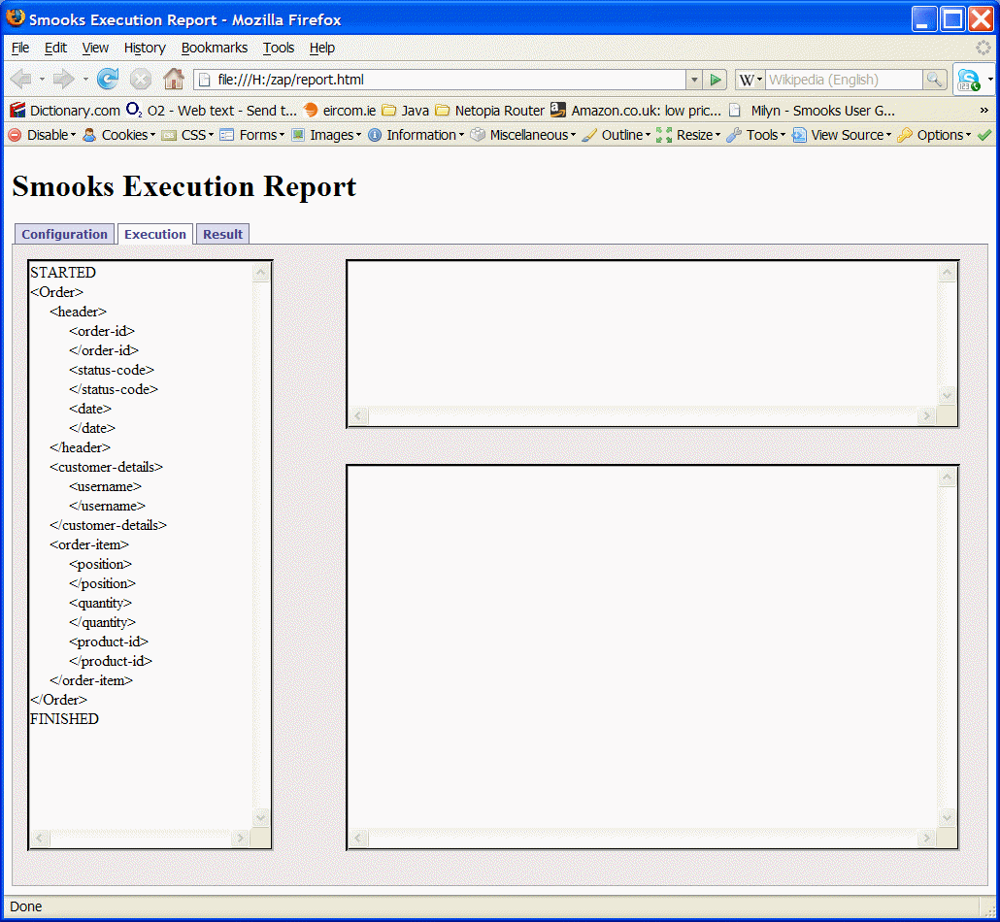
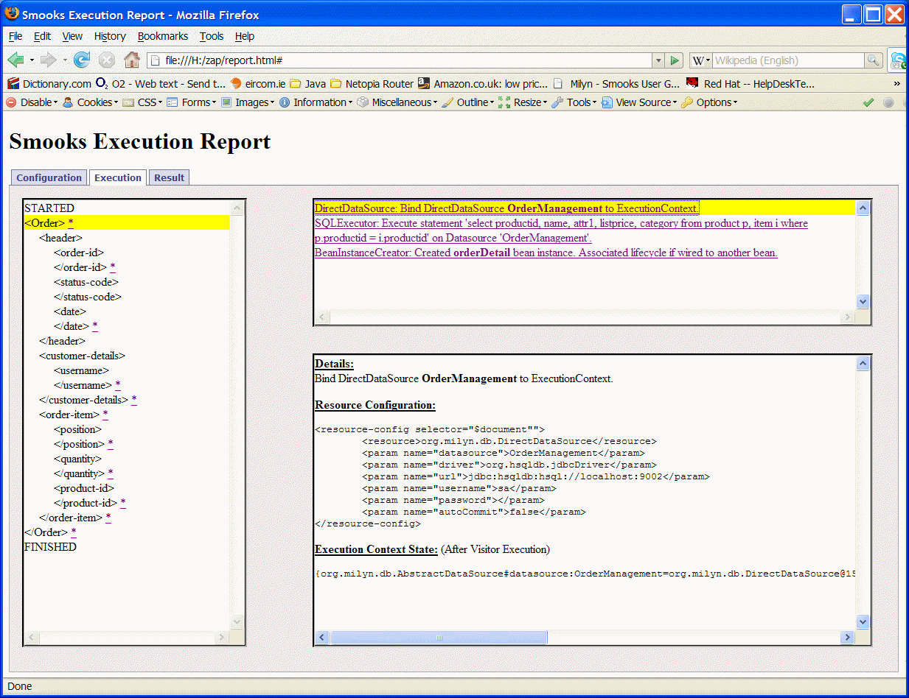
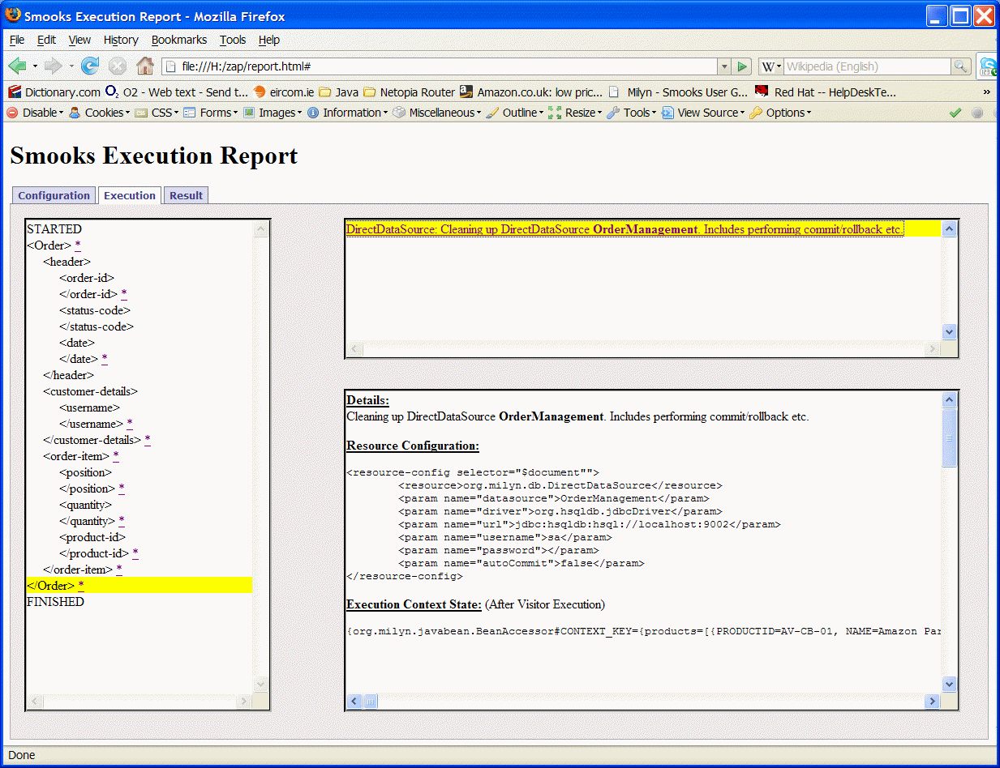
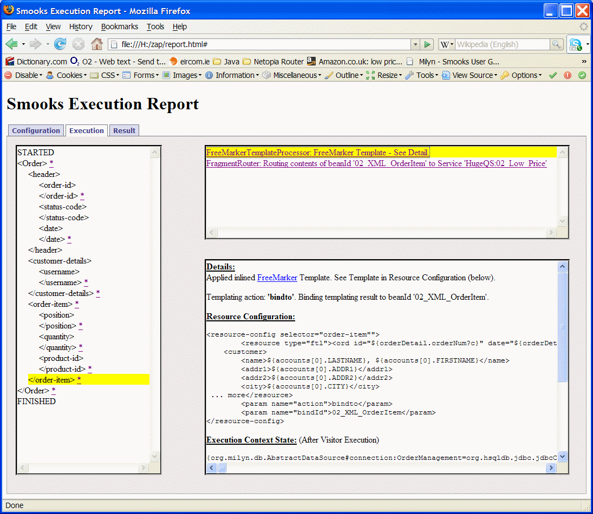

messages of any size, including huge messages i.e. GB size messages.
Messages can often be received containing data of interest to multiple parties. Extracting and distributing this data
is a non trivial process. Firstly you have the challenge of physically extracting the message data from the source message.
Then you need to reassemble the extracted data in a format consumable by each of these parties. Each party may have different
requirements (different formats etc) and it's the natural responsibility of the ESB to take care of these differing integration
requirements. Things can get even more complex if the source message does not contain all the information required by the
interested parties.
JBossESB features tools that support solving these issues in a declaritive manner i.e. typically, there's no need to write reams of code.
The ability to parse, split transform and route message fragments is very powerful. These capabilities are also key to solving another
message processing related usecase encountered in the Enterprise i.e. that of
. JBossESB's abilty to perform
complex splitting operations on messages of different formats provides one solution to processing huge messages.
This quickstart demonstrates these capabilities and walks you through the components involved. The Quickstart is based on
a usecase where JBossESB is used to process Order messages (EDI format) from the local file system.
Each Order message contains order header information (orderId, date, customer userId etc), as well as a list of order items
(productId, quantity etc). JBossESB is used to:
The main ESB components used in this quickstart (and how they depend on each other) are as follows:
High Level
As can be seen from the
illustration above, this quickstart revolves around the
"01_split_enrich_transform_route" Service deployment. This .esb deployment defines the "SplitterService"
and "04_Reptiles_notify_webservice_proxy" Services as follows:
<service category="HugeQS" name="SplitterService" description="Splits out the order items and routes them.">
<listeners>
<fs-listener name="FileGateway" busidref="ediFileMessageBus" is-gateway="true" poll-frequency-seconds="2">
<property name="composer-class" value="org.jboss.soa.esb.smooks.splitting.FileStreamSplitter"/>
<property name="splitterConfig" value="/smooks_configs/main.xml"/>
<!-- property name="reportPath" value="/zap/report.html"/ -->
</fs-listener>
</listeners>
<actions mep="OneWay">
<action name="print" class="org.jboss.soa.esb.example.PrintMessage">
<property name="delay" value="500" />
</action>
</actions>
</service>
<service category="HugeQS" name="04_Reptiles_notify_webservice_proxy" description="Routes the SOAP requests to the 'Reptiles Notification' Webservice">
<actions mep="OneWay">
<action name="httprouter" class="org.jboss.soa.esb.actions.routing.http.HttpRouter">
<property name="endpointUrl" value="http://127.0.0.1:8080/Quickstart_Huge_Enrich_Split_Transform_Route/ReptilesNotifyWS" />
<property name="method" value="POST" />
<property name="responseType" value="STRING" />
</action>
</actions>
</service>
The "SplitterService" is of most interest since this is the Service that performs the Splitting & Routing of the Order Items contained in the
source EDI Order message. The FileGateway is configured with the
FileStreamSplitter, which is a specialised MessageComposer implementation.
The
FileStreamSplitter uses
Smooks to perform the Splitting & Routing of the Order Items.
We will look at this in more detail later.
The "04_Reptiles_notify_webservice_proxy" Service is also interesting. It acts as a Webservice proxy service to the "ReptilesNotifyWS" Webservice (
see illustration),
using the
HttpRouter to route SOAP payloads received from "SplitterService".
The "SplitterService" Service also routes split Order Item messages to a number of other Services based on content (Content Based Routing). The "02_Low_Price" and "03_High_Price"
Services are very simple and effectively the same. The only difference is that the "02_Low_Price" Service receives low priced Order Items as XML, while the
"03_High_Price" Service receives high priced Order Items as Java Objects. The configuration of the "02_Low_Price" Service is as follows:
<service category="HugeQS" name="02_Low_Price" description="02_Low_Price Service">
<listeners>
<jms-listener name="XMLjms" busidref="02XMLBus" />
</listeners>
<actions mep="OneWay">
<action name="print" class="org.jboss.soa.esb.example.PrintMessage" />
</actions>
</service>
As can be seen, this Service (and the "03_High_Price" Service) is very simple. It just prints the ESB Message payload to the console.
The "SplitterService" Service also routes split Order Item messages to the Database.
We will look at this in more detail later.
In all cases where the "SplitterService" Service routes split Order Item messages, the messages are enriched with additional Customer and Product data, which
it gets from the Database.
Splitting & Routing Details
The incomming EDI messages are in the following format:
HDR*1213529618453*0*Wed Nov 15 13:45:28 EST 2006
CUS*ACID
ORD*0*4*AV-CB-01
ORD*1*5*FL-DLH-02
ORD*2*5*AV-CB-01
... (more ORD segments, 1 per Order Item)...
The top level
Smooks configuration for Splitting & Routing this message is:
<?xml version="1.0"?>
<smooks-resource-list xmlns="http://www.milyn.org/xsd/smooks-1.1.xsd"
xmlns:edi="http://www.milyn.org/xsd/smooks/edi-1.1.xsd">
<!--
Filter the message using the SAX Filter (i.e. not DOM, so no
intermediate DOM, so we can process huge messages...
-->
<params>
<param name="stream.filter.type">SAX</param>
</params>
<!-- Configure the reader for the EDI message... -->
<edi:reader mappingModel="/smooks_configs/parse/edi-to-xml-order-mapping.xml" />
<!-- Import datasource configs... -->
<import file="database/datasources.xml" />
<!-- Import reference/enrichment data configs - products, accounts etc... -->
<import file="database/ref-data.xml" />
<!-- Import config for binding order and order-item data into memory... -->
<import file="bindings.xml" />
<!-- Import config for routing order item XML to the "02_Low_Price" Service... -->
<import file="routing/route-to-02_Low_Price_Service.xml" />
<!-- Import config for routing order item Java Objects to the "03_High_Price" Service... -->
<import file="routing/route-to-03_High_Price_Service.xml" />
<!-- Import config for routing order item Java Objects to the "04_Reptiles_notify_webservice_proxy" Service... -->
<import file="routing/route-to-04_Reptiles_notify_webservice_proxy.xml" />
<!-- Import config for routing order items to the database... -->
<import file="routing/route-to-05_Database.xml" />
</smooks-resource-list>
Detailed explanations for each of the imported resource configuration files are hyperlinked.
EDI Parsing
As its name suggests, the <edi:reader> configuration configures the reader for the Smooks instance.
<!-- Configure the reader for the EDI message... -->
<edi:reader mappingModel="/smooks_configs/parse/edi-to-xml-order-mapping.xml" />
The "mappingModel" attribute defines the EDI to SAX Event mapping model configuration for the parser. After
configuring this resource and turning on the Smooks Execution Report we can see the message event stream as produced
by the EDI Parser:

database/datasources.xml
This Quickstart interfaces to the database for a number of reasons:
- Reading Customer and Product information not presented in the source EDI message. This information is used to enrich
the split order item messages before routing.
- Persisting Order Item details (Routing to the Database).
The "database/datasources.xml" Smooks resource configuration file defines the Datasource details for accessing the Database:
<smooks-resource-list xmlns="http://www.milyn.org/xsd/smooks-1.1.xsd"
xmlns:ds="http://www.milyn.org/xsd/smooks/datasource-1.1.xsd">
<!--
Configure the "OrderManagement" DB access datasource...
-->
<ds:direct bindOnElement="$document" datasource="OrderManagement" autoCommit="false"
driver="org.hsqldb.jdbcDriver" url="jdbc:hsqldb:hsql://localhost:9002"
username="sa" password="" />
</smooks-resource-list>
This Datasource is bound to the Smooks ExecutionContext at the start of message processing (bindOnElement="$document" - selects the message root/document event as the lifecycle event).
Any JDBC Connection created for the ExecutionContext is committed/rolledback and cleaned up at the end of the message processing (bindOnElement="$document"). The
HtmlReportGenerator
(Smooks Execution Report Generator) is very useful for visualising this e.g. The "visitBefore" event shows the binding of the Datasource to the ExecutionContext:

And the "visitAfter" event shows the cleanup:

database/ref-data.xml
The "database/ref-data.xml" resource file configures resource for reading reference/enhancement data from the
Database. Each resource is commented inline:
<?xml version="1.0"?>
<smooks-resource-list xmlns="http://www.milyn.org/xsd/smooks-1.1.xsd"
xmlns:db="http://www.milyn.org/xsd/smooks/db-routing-1.1.xsd">
<!--
The "OrderManagement" datasource is configured in the database/datasources.xml config file.
-->
<!--
At the start of the message, select the list of products and bind it into the bean context
under the beanId of "products". We only want to do this lookup once Smooks instance i.e. not for
every message, otherwise we'd kill memory performance. To control this, we set the "resultSetScope"
param to "APPLICATION". The actual order item product row will be selected from the resultset by
the ResultsetRowSelector config (below)...
-->
<db:executor executeOnElement="$document" datasource="OrderManagement" executeBefore="true">
<db:statement>select productid, name, attr1, listprice, category from product p, item i where p.productid = i.productid</db:statement>
<db:resultSet name="products" scope="APPLICATION" />
</db:executor>
<!--
For every order-item, select the appropriate product row from the in-mem "products" reference data
resultset, using the ResultsetRowSelector. Bind the selected product row back into the
bean context under a beanId of "product"...
-->
<db:resultSetRowSelector selectRowOnElement="order-item/product-id" resultSetName="products" beanId="product" executeBefore="false">
<db:where>row.PRODUCTID == orderItem.productId</db:where>
<db:failedSelectError>Unknown Order Item product ID '${orderItem.productId}' on order '${orderDetail.orderNum?c}'.</db:failedSelectError>
</db:resultSetRowSelector>
<!--
At the end of the customer-details/username, select the user account and bind it into the bean context
under the beanId of "accounts". The users account should be the only entry in this list....
-->
<db:executor executeOnElement="customer-details" datasource="OrderManagement">
<db:statement>select * from ACCOUNT where userid = ${orderDetail.uname}</db:statement>
<db:resultSet name="accounts" />
</db:executor>
</smooks-resource-list>
The data read from the Database by the above resources is bound into the bean context and so is available
to other resources executing under the same ExecutionContext e.g. templating resources, BeanPopulator
resources etc. The full Products list Resultset is available under the beanId "
products", with the
product for the current Order Item being processed being available under the beanId "
product" (see the
<db:resultSetRowSelector> resource above). The customer account info for the message being processed under the
ExecutionContext is captured and made available under the beanId of "
accounts". We don't select the
customer account row from the Resultset (using the <db:resultSetRowSelector> - as done with the products Resultset).
It would be a good idea to add this <db:resultSetRowSelector> because we could then configure a "<db:failedSelectError>".
It would also mean that the expressions used in other resources to reference the account info (e.g. in templates) wouldn't
contain the Resultset row indexing characters i.e. "accounts[0]". Instead, we would reference the account
info using "account" based expressions, which is possibly a little clearer.
bindings.xml
At the heart of nearly all Smooks based message processing is the concept of "binding" data from the Source
message event stream into memory (into the bean context). Once the data is bound into memory in a Physical or
Virtual Object Model, it can be used by other Smooks resources such as:
- Templating resources (FreeMarker, XSLT, StringTemplate),
- BeanPopulator resources (Expression Based Bindings),
- Routing resources (Database, File, JMS),
- Resource <condition> expressions,
- Custom Smooks Visitor implementations
- etc, etc, etc...
The populated Object Model may itself be the Result output by the Smooks.filter operation. Basically, the
data binding functionality provided by the Javabean Cartridge is a very fundamental part of practically
all Smooks based filtering operations. Without it, you are quite limited in what you can do.
The "bindings.xml" resource defines the core bindings used in this quickstart. It extracts the Order header
and Order Item data from the message event stream and binds it into a Virtual Object Model (i.e. a HashMap):
<?xml version="1.0"?>
<smooks-resource-list xmlns="http://www.milyn.org/xsd/smooks-1.1.xsd"
xmlns:jb="http://www.milyn.org/xsd/smooks/javabean-1.1.xsd">
<!--
Virtual Model Binding Configurations for the order message elements...
Just capturing the order and order-item element details into 2
Maps, overwriting each order-item as we iterate through the message i.e. not
accumulating them in memory => low memory footprint because we only
have details of the current order + current order-item in memory
at any given time (i.e. we never have a full order in memory)...
-->
<!--
Bind the main order details....
-->
<jb:bindings beanId="orderDetail" class="java.util.HashMap" createOnElement="order">
<jb:value property="orderNum" data="header/order-id" decoder="Long" />
<jb:value property="uname" data="customer-details/username" />
<jb:value property="date" data="header/date" decoder="Date">
<jb:decodeParam name="format">EEE MMM dd HH:mm:ss z yyyy</jb:decodeParam>
</jb:value>
</jb:bindings>
<!--
Bind each order-item. Not building a list of order items because we only want to have
one order-item in memory at any one time. This way, we can handle a huge orders with many
many order items..
-->
<jb:bindings beanId="orderItem" class="java.util.HashMap" createOnElement="order-item">
<jb:value property="position" data="order-item/position" decoder="Integer" />
<jb:value property="quantity" data="order-item/quantity" decoder="Integer" />
<jb:value property="productId" data="order-item/product-id" />
</jb:bindings>
</smooks-resource-list>
Once this data is bound into the bean context (under the beanIds of "orderDetail" and "orderItem"),
it is available to all other resources executing under the same Smooks ExecutionContext. The key to
processing huge messages is the fact that we can keep the memory footprint associated with the
ExecutionContext to a minimum. We do this by only maintaining the current Order Item in memory at
at any one time i.e. we don't accumulate a list of the Order Items. This also means that
we need to be able to use the Order Item data (for splitting, routing etc) while we have it in
memory and before we throw it away in place of the next Order Item in the message event stream.
In other words, we can't wait for the whole message to be processed before processing the Order Item data;
everything is done while we are processing the message event stream i.e. binding, templating/transforming,
routing etc. We do this by targeting these other resources at the same events in the message event stream
i.e. the <order-item> events.
This is the most difficult part of Smooks to get your head around i.e. the idea that multiple things are
conceptually happening in parallel. On the other side, this is where the power of Smooks lies. For this
reason, Smooks provides a HtmlReportGenerator class to help you visualise Smooks processes. It generates
a Smooks Execution Report and is the nearest thing to a debugging tool that Smooks currently has. See
the Smooks User Guide for details.
routing/route-to-02_Low_Price_Service.xml
This resource configuration file defines the routing resources for the "02_Low_Price"
Service:
<?xml version="1.0"?>
<smooks-resource-list xmlns="http://www.milyn.org/xsd/smooks-1.1.xsd"
xmlns:ftl="http://www.milyn.org/xsd/smooks/freemarker-1.1.xsd"
xmlns:esbr="http://www.jboss.org/xsd/jbossesb/smooks/routing-1.0.xsd">
<!--
At the end of every order-item, route the order item XML ("02_XML_OrderItem") to the
"02_Low_Price" Service, if the total is 20 or less...
-->
<esbr:routeBean beanIdRef="02_XML_OrderItem" toServiceCategory="HugeQS" toServiceName="02_Low_Price" routeOnElement="order-item">
<condition>
<!---->
</condition>
</esbr:routeBean>
<!--
At the end of every order-item, generate an <ord> split message for the "02_XML" Service
and bind it back into the bean context under a bean ID of "02_XML_OrderItem". 02_XML_OrderItem
will be router by the FragmentRouter (configured above)..
-->
<ftl:freemarker applyOnElement="order-item">
<ftl:template><!----></ftl:template>
<ftl:use>
<ftl:bindTo id="02_XML_OrderItem" />
</ftl:use>
</ftl:freemarker>
</smooks-resource-list>
So the first resource listed in this configuration simply routes the XML data (generated by the second resource)
to the "02_Low_Price" Service. The resource is only applied if the specified condition is met. The second resource
generates the XML message to be routed by applying a FreeMarker template to the data in the bean context. As can be
seen above, the template sucks in Customer and Product data bound to the bean context
from the
database ("accounts[0]" and "product"), as well as data bound into the bean context
from the
source message itself ("orderDetail" and "orderItem").
Both of these resource fire on the visitAfter event of the <order-item>
element. The order in which they fire depends on the order in which they appear in the resource configs, with the
visitBefore events firing "first-to-last" and the visitAfter events firing "last-to-first". This is why the templating
resource is positioned after the routing resource i.e. because we want it's visitAfter to be applied before the
FragmentRouter visitAfter (uses the ServiceInvoker to route the messages). This all seems a bit complex, but is
actually intuitive enough if you use the Smooks Execution Report during development because you can see the resources
and the order in which they are being applied.
The following illustration shows the resources applied on the visitAfter event for the <order-item> element.
It shows the FreeMarker template resource being applied before the
FragmentRouter resource.

routing/route-to-03_High_Price_Service.xml
This resource configuration file defines the routing resources for the "03_High_Price"
Service:
<?xml version="1.0"?>
<smooks-resource-list xmlns="http://www.milyn.org/xsd/smooks-1.1.xsd"
xmlns:jb="http://www.milyn.org/xsd/smooks/javabean-1.1.xsd"
xmlns:esbr="http://www.jboss.org/xsd/jbossesb/smooks/routing-1.0.xsd">
<!--
At the end of every order-item, route the order item Java Objects ("03_order") to the
"03_High_Price" Service, if the price per item is 190 or more...
-->
<esbr:routeBean beanIdRef="03_order" toServiceCategory="HugeQS" toServiceName="03_High_Price" routeOnElement="order-item">
<condition>
<!---->
</condition>
</esbr:routeBean>
<!--
At the end of every order-item, bind together the orderDetail with the current
order item in a new HashMap and asign it under the beanId "03_order" in the bean
context. The data is pulled into the "highprice" Java object model using java
binding configs that pull the data from the bean context, which contains data from
the database, as well as data bound in for the input message. We use MVEL
expressions to access this info (expression bindings).
03_order gets routed by the above config..
-->
<jb:bindings beanId="03_order" class="org.jboss.soa.esb.example.highprice.Order" createOnElement="order-item">
<jb:wiring property="address" beanIdRef="03_address" />
<jb:wiring property="product" beanIdRef="03_product" />
<jb:expression property="firstName">accounts[0].FIRSTNAME</jb:expression>
<jb:expression property="lastName">accounts[0].LASTNAME</jb:expression>
<jb:expression property="date">orderDetail.date</jb:expression>
<jb:expression property="quantity">orderItem.quantity</jb:expression>
</jb:bindings>
<jb:bindings beanId="03_address" class="org.jboss.soa.esb.example.highprice.Address" createOnElement="order-item">
<jb:expression property="email">accounts[0].EMAIL</jb:expression>
<jb:expression property="address1">accounts[0].ADDR1</jb:expression>
<jb:expression property="address2">accounts[0].ADDR2</jb:expression>
<jb:expression property="city">accounts[0].CITY</jb:expression>
<jb:expression property="state">accounts[0].STATE</jb:expression>
</jb:bindings>
<jb:bindings beanId="03_product" class="org.jboss.soa.esb.example.highprice.Product" createOnElement="order-item">
<jb:expression property="id">product.PRODUCTID</jb:expression>
<jb:expression property="title">product.NAME</jb:expression>
<jb:expression property="category">product.CATEGORY</jb:expression>
<jb:expression property="price">product.LISTPRICE</jb:expression>
</jb:bindings>
</smooks-resource-list>
The first resource specifies the
FragmentRouter resource for routing the contents of the "03_order" bean to
the "03_High_Price" Service, where the product price is greater than 190.00. The other resources specify the
BeanPopulator
resources required for creating and populating the the "03_order" bean Object Model.
This configuration differs from the
routing/route-to-02_Low_Price_Service.xml configuration
in that this configuration is routing a Java Object Model as opposed to an XML blob. Also, the binding configurations defined
in this configuration are different to those defined in the
bindings.xml configuration because:
- The data is being bound to a "Physical Object Model" Vs a "Virtual Object Model" i.e.
the Order class Vs a simple HashMap.
- They are "Expression Based Bindings" i.e. the values being bound into the Object Model are coming from expression evaluations defined
as the child text of the <binding> elements. The bindings defined in bindings.xml are pulling
their values from the source message. In the case of the expressions defined in this configuration, they are selecting values from
the bean context. The values being selected were bound to the context by the database/ref-data.xml
resources.
routing/route-to-04_Reptiles_notify_webservice_proxy.xml
This resource configuration file defines the routing resources for the "04_Reptiles_notify_webservice_proxy"
Service where the product category is "REPTILES":
<?xml version="1.0"?>
<smooks-resource-list xmlns="http://www.milyn.org/xsd/smooks-1.1.xsd"
xmlns:ftl="http://www.milyn.org/xsd/smooks/freemarker-1.1.xsd"
xmlns:esbr="http://www.jboss.org/xsd/jbossesb/smooks/routing-1.0.xsd">
<!--
At the end of every order-item, route the "Reptiles Notification" SOAP message ("04_SOAP_OrderItem") to the
"04_Reptiles_notify_webservice_proxy" Service, if the order item product.CATEGORY is "REPTILES"...
-->
<esbr:routeBean beanIdRef="04_SOAP_OrderItem" toServiceCategory="HugeQS" toServiceName="04_Reptiles_notify_webservice_proxy" routeOnElement="order-item">
<condition>
<!--
product.CATEGORY == "REPTILES"
-->
</condition>
</esbr:routeBean>
<!--
At the end of every order-item, generate an <ord> split message for the "02_XML" Service
and bind it back into the bean context under a bean ID of "02_XML_OrderItem"...
-->
<ftl:freemarker applyOnElement="order-item">
<ftl:template><!----></ftl:template>
<ftl:use>
<ftl:bindTo id="04_SOAP_OrderItem" />
</ftl:use>
</ftl:freemarker>
</smooks-resource-list>
This routing configuration is nearly identical to that defined in
routing/route-to-02_Low_Price_Service.xml.
The only difference is the format of the XML, the destination Service and the condition under which the message is to be routed.
As can be seen in the
04_Reptiles_notify_webservice_proxy Service configuration, these SOAP messages are routed to the
ReptilesNotifyWS Webservice using the
HttpRouter.
routing/route-to-05_Database.xml
This resource configuration file defines the routing resources for routing Order Item data to the Database:
<?xml version="1.0"?>
<smooks-resource-list xmlns="http://www.milyn.org/xsd/smooks-1.1.xsd"
xmlns:db="http://www.milyn.org/xsd/smooks/db-routing-1.1.xsd">
<!--
The "OrderManagement" datasource is configured in the database/datasources.xml config file.
-->
<!--
This resource is needed because we only want to limit the number or orders inserted into the database,
so we need to count them...
-->
<db:executor executeOnElement="order-item" datasource="OrderManagement" executeBefore="true">
<db:statement></db:statement>
<db:resultSet name="orderCountRS" />
</db:executor>
<!--
At the end of every order-item, insert the order details for that order item...
-->
<db:executor executeOnElement="order-item" datasource="OrderManagement" executeBefore="false">
<condition>
<!--
orderCountRS[0].numOrders < 10
-->
</condition>
<db:statement></db:statement>
</db:executor>
</smooks-resource-list>
The first resource simply queries the Orders table in the database to get a row count. It binds the result to the bean context
under the resultSetName (beanId) of "orderCountRS". This row count is then used as the condition on the second
SQLExecutor resource,
which performs the inserts on the orders table.
{kind=link}
{kind=link}
{kind=link}
{kind=link}
{kind=link}